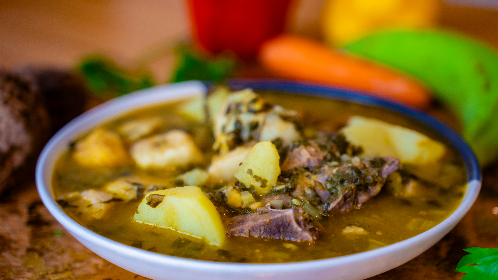

Green Chile Stew

Description:
Green chile stew is a dish often eaten in New Mexico. It is best made during the chile roasting season in the fall. This recipe is easy to make, and only takes a few hours to cook.
Ingredients
- 2lbs pork meat (cut into small pieces)
- 1 28oz can diced tomatoes
- 2-3 red, medium potatoes
- 2 cups green chile
- 2 tsp garlic
- 2 boxes chicken broth
- salt and pepper to taste
Steps
- Cook pork with the broth for 2 hours.
- Cut potatoes and add to broth. Cook for 30 minutes.
- Add chile,tomatoes, garlic, salt, and pepper. Bring to a simmer boil.
- Serve